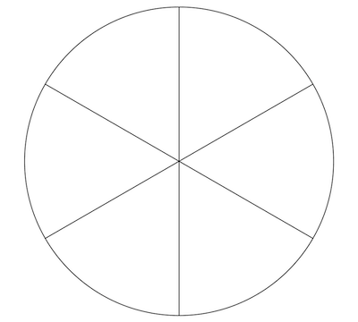
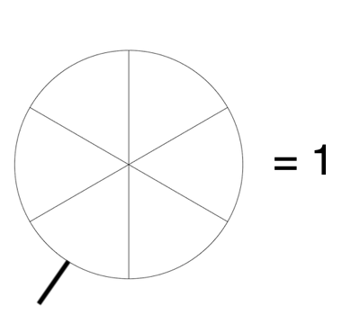
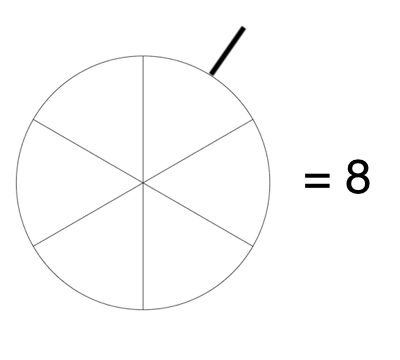
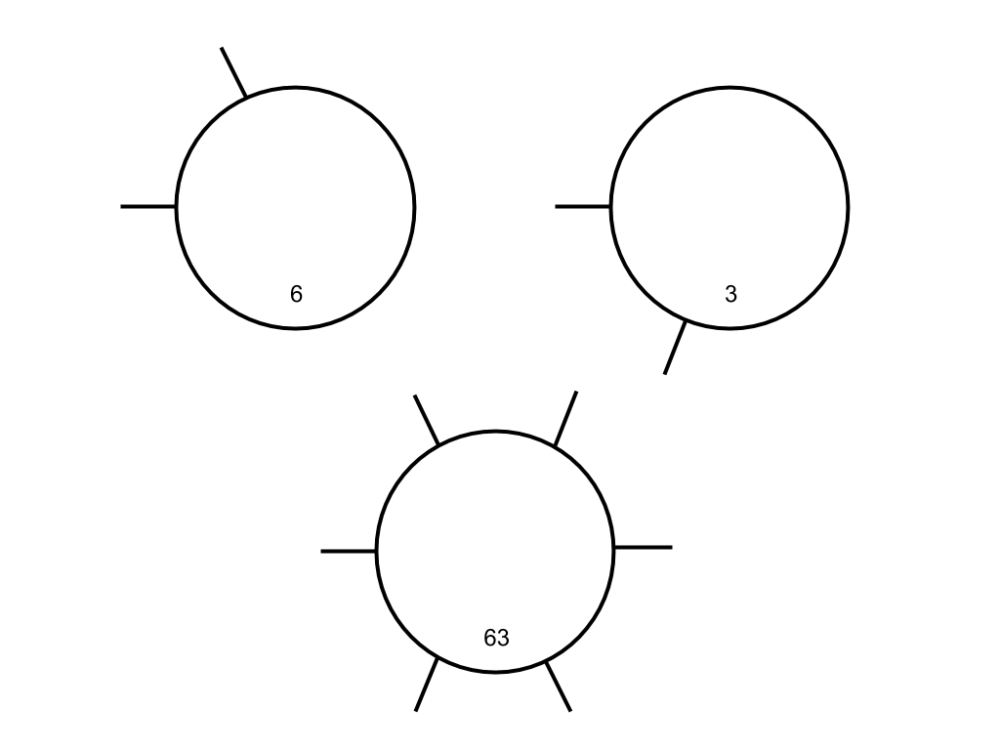

Binary numbers, the lifeblood of computing machines, are not very readable for humans. At a glance, do you know which base-10 number is represented by 110101? What about 001110?
Instead of a dense string of digits, let's try representing these numbers visually. If we take a circle, we can imagine cutting it into slices, like a pizza. Six slices gives us six bits to work with.
To indicate an "on" or 1-bit, let's mark that section of the circle with an extended line. We'll start from the bottom of the circle going clockwise, so the lower-left section represents 20, the middle-left section represents 21, continuing around to the lower-right section which represents 25.
This design is clean enough that we don't really need to show the actual circle slices. Here are a few examples of some different binary numbers represented this way:
Now you can practice creating some binary circles for yourself. A base-10 number on the outer edge of the circle gives you an orientation for the bottom of the circle.